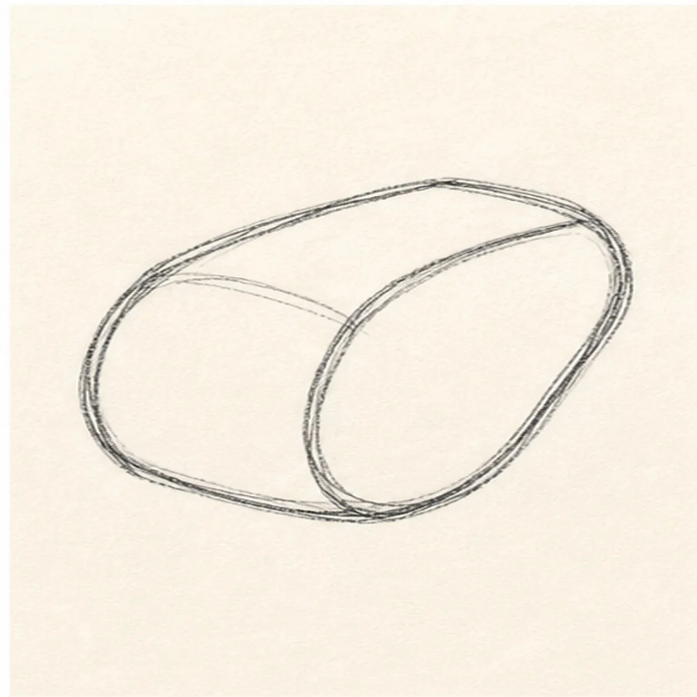
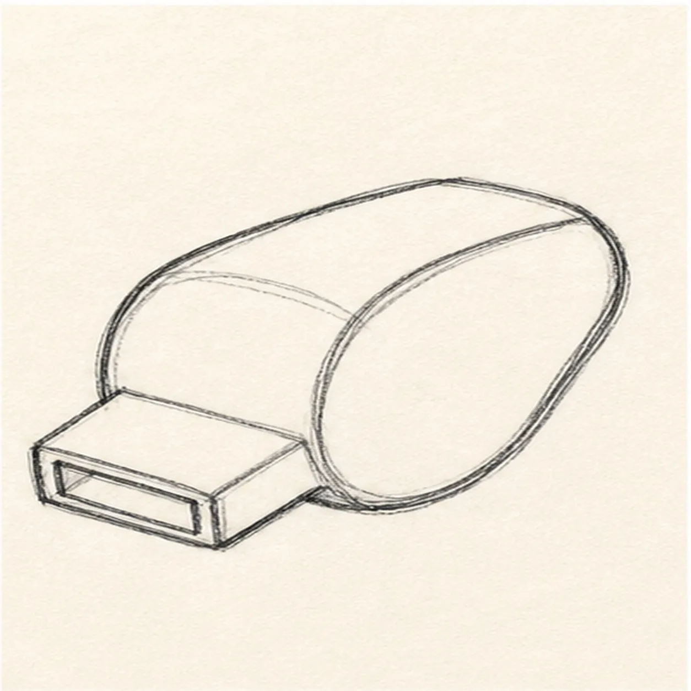
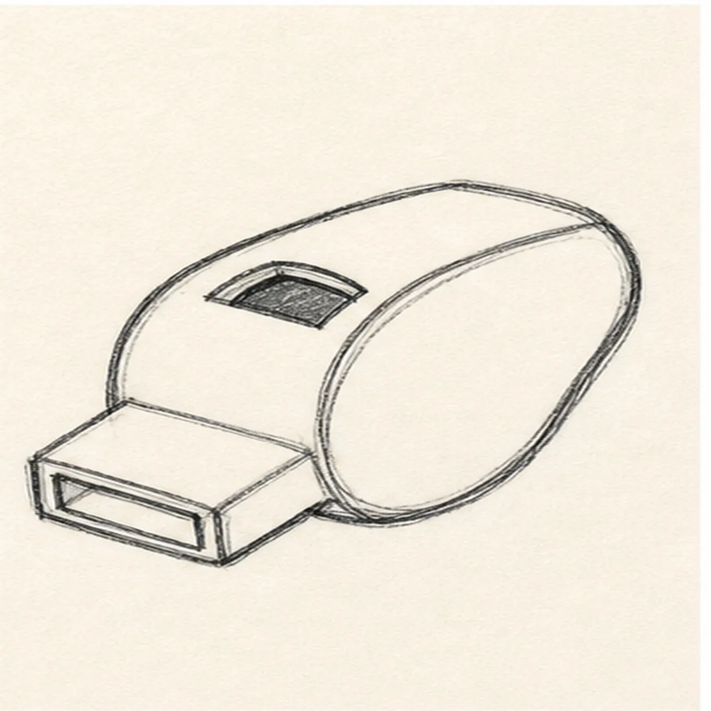
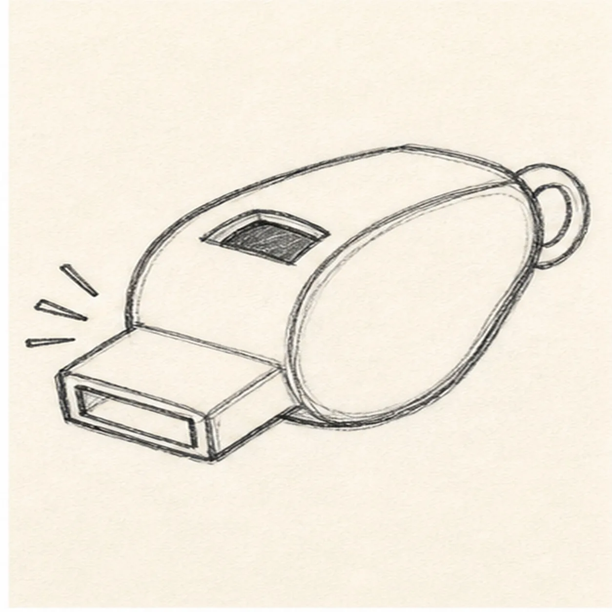
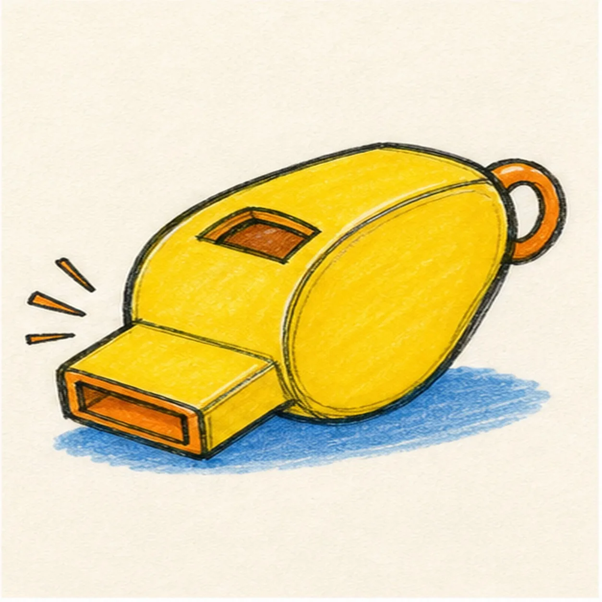

Felt-tip marker mode
Let's draw a soccer whistle
Treat this as one playful practice round: sketch the idea loosely, simplify the shapes, then commit with confident marker outlines and bright fills.
-
01

Draw the whistle body
Draw a rounded whistle body tilted slightly upward.
Doodle tip: Think of the body as a soft capsule, not a perfect oval. A little handmade wobble keeps it lively.
-
02

Add the mouthpiece
Attach a short rectangular mouthpiece to one side of the body.
Doodle tip: Line up the mouthpiece with the body angle. That shared tilt makes the whistle feel like one object.
-
03

Cut the pea window
Add the small rounded pea window and inside edge on the whistle body.
Doodle tip: Keep the window simple and dark. One clear shape reads better than tiny mechanical detail.
-
04

Loop and sound marks
Add a rear ring loop, then place a few short comic sound marks near the mouthpiece.
Doodle tip: Use short marks without letters. They add energy without turning the drawing into a sign.
-
05

Fill the whistle color
Fill the body yellow, add orange accents, and place a small blue or gray shadow under the whistle.
Doodle tip: Pull the marker strokes along the rounded body. Directional streaks help the color feel like a curved surface.
-
06

Make the whistle sharp
Thicken the black outlines, even the existing marker fills, clarify the window, loop, sound marks, accents, and same shadow.
Doodle tip: Stop before adding a face, scoreboard, words, or a border. The body, mouthpiece, loop, and sound marks carry the doodle.